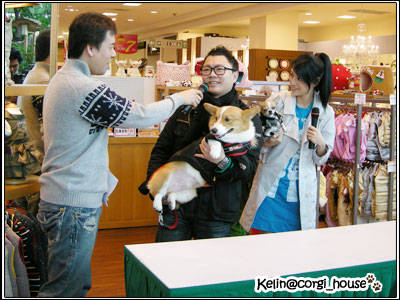
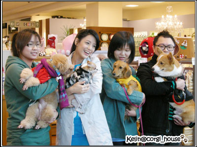
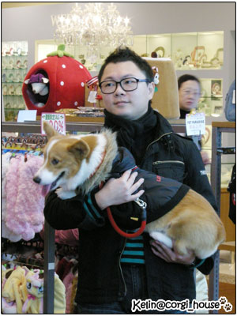
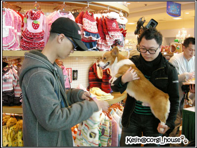
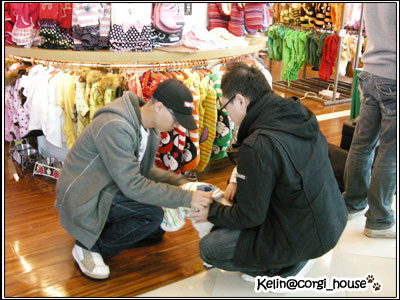
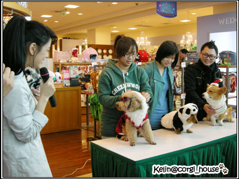

今天SOGO復興館狗狗造型決賽~！ 摩卡卡又得第1名嘍！
今天SOGO復興館狗狗造型決賽~！ 摩卡卡又得第1名嘍！
來賓請掌聲鼓勵鼓勵！


中午約12:30我們到了sogo復興館九樓的PET PARADISE，
工作人員說明了一下流程，一開始會有個小小的自我介紹，之後會請狗寶貝挑選現場任何一件1000元以下的衣服做變裝
而且這件衣服就會當成小禮物送給我們帶回家嘍!!  超多超可愛的衣服的啦！
超多超可愛的衣服的啦！
麻麻就跟阿酒姐姐立刻逛起來~
結果要上台的猛哥突然一臉哀怨說：你們有人要教我自我介紹要講什嘛嗎？我不會啦！
哈哈哈~我們完全忘了快緊張死了的老爸! 

後來江語晨到了現場~活動也開始了!! ( 哇塞!她本人很漂亮耶~果然超瘦!!  )
)
（上圖）猛哥正在接受主持人訪問，自我介紹中（講的很好啊！）
接下來主持人要求摩卡卡來點加分題～呃....就來個握手跟give my five這基本款好了！

給猛哥賺到了！跟美女站在一起耶~ 還可以跟她聊天了~她說她也很喜歡柯基歐!!!
還可以跟她聊天了~她說她也很喜歡柯基歐!!!
他看起來一點也不緊張!你們說是不是??是不是??

跟另外兩位參賽者一起合照!! 小臘腸叫apple..很可愛~但不好惹!!  哈哈
哈哈
另一位是紅貴賓，很可愛！看起來也很乖...但很可惜！！大家沒太多時間互動交流一下！
  可憐的猛哥！！整個活動其實是一直抱著摩卡卡
可憐的猛哥！！整個活動其實是一直抱著摩卡卡
我看他手都在抖了吧！好歹摩卡也是重達１０公斤的小子（果然他下來說手快抽筋了.... )
)

2分鐘變裝中~是史迪奇的針織毛衣歐!超可愛的
配色很好看~是我家葛哥選的耶~ 眼光不錯嘛!! 麻麻我超愛的!!
眼光不錯嘛!! 麻麻我超愛的!!

不過衣服不是很大件!!哈哈...但還可以塞的下啦!!!!! 其實摩卡一點都不胖!!是真的
其實摩卡一點都不胖!!是真的
  鏘鏘鏘!!!大家都完成嘍!!! 小臘腸apple是小熊貓~ 哈哈哈 臉都看不到了!
鏘鏘鏘!!!大家都完成嘍!!! 小臘腸apple是小熊貓~ 哈哈哈 臉都看不到了!
紅貴賓很應景的穿了火紅色的聖誕裝還帶了眼鏡歐!!!!帥
至於我們的主題呢?哈哈哈..純粹是喜歡這件衣服想帶回家啦!!!!  (工作人員不要罵我!!!)
(工作人員不要罵我!!!)
不過我們也有秘密武器~小聖誕帽 是麻麻我自備的歐! 帶起來很可愛吧!! 

跟小熊貓合照一張!!!!這件熊貓裝質料超 好的!!摸起來很舒服 
摩卡覺得無聊了!!還乖乖的趴下休息!!!!好好笑..... 大家都說你好乖..不吵不鬧不兇!!!100分
大家都說你好乖..不吵不鬧不兇!!!100分
變裝完大家又合照一張!
然後現場開放投票!! 不過最後名次是決定於江語晨的那一票嘍!!! 是滴~她投給了摩卡卡...
是滴~她投給了摩卡卡... 我們是第1名
我們是第1名
她覺得摩卡這件衣服配色很好看~跟卡卡的毛色很搭~還有這頂小聖誕帽也跟衣服搭配的很好!!
謝謝她的這一票~~開心開心
第1名可以留下來跟她做互動拍拍照!!
至於獎品呢?  比我期待中好耶!!!真棒!!!
比我期待中好耶!!!真棒!!!
除了送了一件現場挑的衣服之外呢~還送了價值1500元的現金點數~可以購買商品折抵
還有很好的店長~也謝謝他~其實我們的衣服超過1000塊!!!他很大方說不用補差額了!!! Thank u
不過我已經用了450買個史迪奇的禮貌帶~下篇網誌再給大家看
今天的活動很好玩~也不會花太久的時間!!! 謝謝支持超人裝的大家!!!
想要試穿超人裝我可以外借給你們啊!!! 
想看更多照片請點---> 江語晨狗狗造型賽
親切的工作人員部落格請點--->江語晨狗狗在型擂台賽（決賽）at PET PARADISE